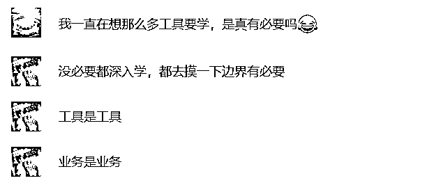
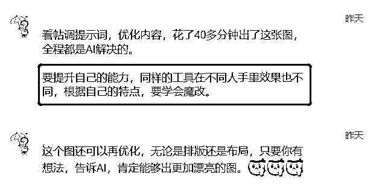
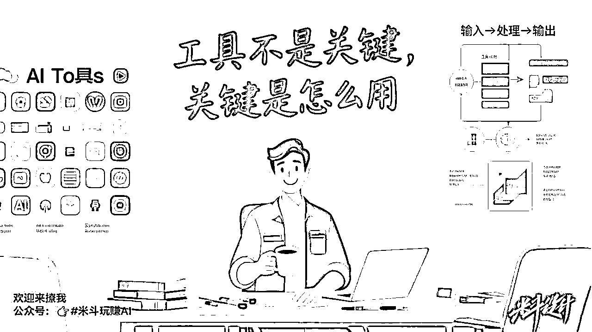
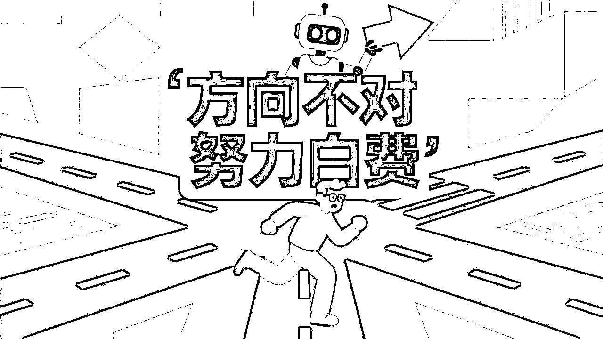

来源：https://s296cam1nz.feishu.cn/docx/Y0ggdpoaSo0h7JxVTKJcebbsnVc
Hello，我叫米斗，品牌商业增长顾问，AI视觉营销设计师，分享能解决实际问题的AI工具/方法！请多多指教~
前言：
有圈友在问，新手如何去学习和使用AI？
当时在社群里面已经回答ta了，我想其他圈友应该也有同样的问题，于是我就写了这篇文章。


最近有朋友问我：AI工具这么多，我是不是每个都得学会？
老实说，我特别能理解这种焦虑。
AI日新月异，工具更新跟坐火箭一样快。
但我的答案是：不用卷技术，更不用全都会。
你真正要搞懂的是——怎么把AI用到自己的业务里，用出结果。
今天我想跟你聊聊，新手学AI前，最应该明白的3件事。
少走弯路，早点见效。
🧠 金句总结：同样的工具，不同的人用，效果差距巨大。
AI不是主角，你才是。
工具就像锤子，你想钉钉子，它就是神；你拿它切菜，那就是笑话。
有次我在做图，调提示词、改细节，40分钟搞定，全程AI完成。
重点不在于我用了哪个AI，而是我清楚我要什么——这才是关键。
你是不是也常常反过来了？
一打开新工具就开始研究怎么用，而不是问自己到底要解决啥问题？

🧠 金句总结：工具不是关键，关键是你用在哪儿、怎么用。
AI用在哪儿，效果完全不同。
做设计、写公众号、跑社群，AI都有不同用法。
你要从自己每天的工作流程里找机会点，把AI套进去。
比起死记Prompt，不如建立一套你自己的AI流程。
比如“输入——加工——产出”，更容易复制、优化、真正落地。
我经常做的事就是：
找到业务里的需求 → 选合适的工具 → 跑通流程 → 打包变产品。
甚至我请技术做出AI工具，再卖给同行。
他们不在乎你用哪个AI，只在乎“能不能提效、省时间”。
🧠 金句总结：新手入门，先低门槛起步，再靠实战不断魔改。
很多人一上来就买课、装插件、报班，其实没必要。
先用免费的，试试看能不能解决你的小问题。
比如你让AI写篇文案、出个方案、整理笔记。
试几次你就知道，它值不值得你深入用。
我经常做的事就是“魔改”Prompt（提示词）。
明明是同一个工具，用在我手里效果可能更好。
关键就在于：我调教得更贴合自己的需求。
只要你有想法、会表达，就能把AI变成自己的超级助理。
前段时间，AI热到爆炸，大家都在卷炫技、写高级Prompt。
但老实说，如果不能服务业务，不能落地创造价值，就没意义。
真正决定命运的，从来都不是技能，而是方向。
你努力的方向对了吗？AI只是助推器，不是终点。
学对方向，比学会所有工具都重要。

所以，新手学AI：
别怕不会、别卷技术。
搞懂这三件事，你就已经比80%的人走得快了。
👉 想继续学AI实操、选工具、建流程？
欢迎关注我【米斗玩赚AI】，持续更新真实案例+高效玩法。
你现在在用AI做什么？欢迎留言告诉我～